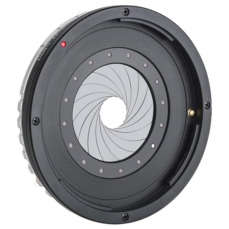

Aperture - The Aperture value or the F-Stop determines the depth of field in your photograph. The smaller the F-Stop, the shallower the depth of field and vice versa for the larger the F-Stop. It also controls how much light is let onto the sensor as it gets bigger or smaller. Most photos have a F-Stop of 5.6-8.1

Shutter Speed - Shutter Speed is how long the shutter stays open for and how long the mirror is up for (DSLR). A longer shutter speed will give you a long exposure, letting lots of light in and a shorter one will give you a darker photo with a shorter exposure. Most regular photos are taken with a SS of 100-200 while in darker or briter scenes it will go up or down more.
ISO - The ISO setting determines the sensors sensetivity towards light. For a darker situation you want a higher ISO setting to enable it to see more light, although the higher the setting, the more digital noise (graininess) in the image. Almost all daytime photos are taken at a setting of 100